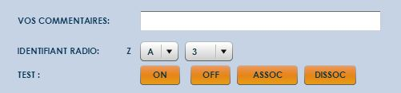

Documentation Plugin Zibase pour SARAH
auteur : Baptiste MARIENVAL
date : 07/07/2013
version : 3.0
2. DESCRIPTEUR DE PERIPHERIQUES (periph.xml)
1. CONFIGURATION ZIBASE.PROP
Le fichier zibase.prop permet de paramétrer les informations nécessaires au bon fonctionnement du plugin.
Il est donc indispensable de renseigner ces 5 éléments :
- plateforme_web
Correspond à l'adresse de la plateforme zibase de votre installation. Par exemple, si vous utilisez la plateforme zibase-club, la valeur sera zibase-club.net. Par défaut, la valeur est zibase.net.
- ip_lan
Permet d'envoyer des requêtes directement à la Zibase via le réseau local (sans passer par la plateforme web). Il suffit pour cela d'indiquer l'adresse IP locale de la Zibase, par exemple : 192.168.0.2
- acces_method
Valeurs possibles : « lan » | « web »
Ce paramètre permet de choisir entre la méthode locale (lan) ou via la plateforme web (web).
Il est conseillé d'utiliser le mode lan pour des questions de temps de réponse, de sécurité et de disponibilité. De plus, certaines fonctionnalités du plugin ne sont disponible que pour le mode lan.
- device
Indique le nom de votre Zibase (ZIBASEXXXXX).
- token
Le token associé a votre compte, visible dans l'onglet systeme de l'interface web.
Ces informations sont disponibles dans la partie « Système » de l’interface Zibase
Les paramètres « device » et « token » sont utilisés uniquement dans le cas d'une connexion web. Lors de l'appel local (mode lan), ils ne sont pas utilisés.
Le mode lan permet une meilleure réactivité et un fonctionnement "offline" (en cas de coupure d'internet par exemple).
Le mode web oblige la requête à transiter via un serveur externe.
Il est conseillé d'utiliser le mode lan pour des raisons
de performance et de sécurité.
2. DESCRIPTEUR DE PERIPHERIQUES (periph.xml)
Depuis la version 2.3, la configuration des périphériques passe par un fichier externe : periph.xml.
Celui ci permet de déclarer ses modules, sondes et scénarios afin de les utiliser ensuite de façon simple dans le reste du plugin, sans avoir à manipuler le code javascript.
Voici un exemple de configuration :
<?xml
version="1.0" encoding="UTF-8"?>
<peripheriques>
<!-- SONDES -->
<periph nom="sonde_temp_ext"
type="sonde" proto="OS" addr="439219202"
addr2="v1" operation="/10" tts="La température
extérieure est de %s degrés"/>
<periph
nom="sonde_hygro_ext" type="sonde" proto="OS"
addr="439219202" addr2="v2" operation=""
tts="L'hygrométrie extérieure est de %s pourcent"/>
<periph nom="sonde_battery_ext"
type="sonde" proto="OS" addr="439219202"
addr2="lowbatt" operation="" tts="Le niveau des piles
est %s"/>
<periph nom="sonde_conso_elec"
type="sonde" proto="WS" addr="133954"
addr2="v2" operation="*100" tts="La consommation
ailaiquetrique globale est de %s kilo watt heure"/>
<periph nom="sonde_battery_elec"
type="sonde" proto="WS" addr="133954"
addr2="lowbatt" operation="" tts="Le niveau des piles
est %s"/>
<!-- ZWAVE -->
<periph nom="volet_sam"
type="module" proto="6" addr="A"
addr2="3" tts=" les volets de la salle à manger "/>
<!-- CHACON -->
<periph nom="lumiere_bureau"
type="module" proto="0" addr="B"
addr2="1" tts=" la lumière du bureau "/>
<periph nom="prise_tv"
type="module" proto="0" addr="G"
addr2="1" tts=" la prise de la télévision "/>
<!-- BLYSS -->
<periph nom="vmc"
type="module" proto="10" addr="G"
addr2="1" tts=" la VMC "/>
<!-- SCENARIO -->
<periph nom="alarme_OFF"
type="scenario" proto="" addr="9"
addr2="" tts=" Alarme désactivée "/>
<periph nom="alarme_ON"
type="scenario" proto="" addr="10"
addr2="" tts=" Alarme activée "/>
</peripheriques>
L’attribut « nom » de la balise <periph> correspond à l’identifiant. Il doit donc être unique. C’est a partir de ce nom que l’on pourra récupérer le reste des attributs.
Il est donc conseillé de suivre une norme de nommage rigoureuse du type : type_info_piece_numero par exemple.
L’attribut « type » correspond, comme son nom l’indique, au type de périphérique. 3 valeurs sont possibles : ‘module’, ‘sonde’ et ‘scenario’. Cette information sera utilisée dans la code javascript pour construire l’URL appelée afin de récupérer les bonnes informations.
L’attribut « proto » indique le protocole utilisé. Pour les sondes, on retrouve cette information sur l’interface de configuration Zibase, dans la partie « périphériques ». Ce sont les 2 lettres correspondant à l’adresse de la sonde. Sur l’image ci dessous, le protocole vaut ‘OS’.

Pour connaitre le protocole utilisé pour les modules, se référer au tableau ci dessous :
|
PROTOCOLE |
ID |
|
DEFAULT
BROADCAST (X10, CHACON) |
0 |
|
VISONIC433
( frequency : device RF LOW, 310..418..433Mhz band)) |
1 |
|
VISONIC868 |
2 |
|
CHACON (32bits
frame) (ChaconV2/DIO series) |
3 |
|
DOMIA (24
bits frame) ( Chacon V1 + low-cost devices) |
4 |
|
RF X10 |
5 |
|
ZWAVE |
6 |
|
RFS10/TS10 |
7 |
|
XDD433
alrm |
8 |
|
XDD868
alrm |
9 |
|
XDD868 inter/shutter |
10 |
|
XDD868 Pilot Wire |
11 |
|
XDD868 Boiler/AC |
12 |
L’attribut « addr » permet d’identifier le module/sonde/scénario mais sa valeur diffère suivant les cas. Dans le cas d’une sonde, cette adresse correspond à la suite de chiffre du champ identifiant radio (dans l’exemple précédent, le champ addr vaut 439219202). Dans le cas d’un scénario, cet attribut correspond à l’identifiant du scénario dans le système Zibase. Pour retrouver ce numéro, il suffit dans lancer le scénario. Le numéro apparaitra entre parenthèses dans le suivi d’activité. Enfin, pour un module, l’attribut addr doit etre renseigné avec la lettre correspondante (voir image ci dessous).

Ici, le champ « addr » doit être renseigné avec la valeur ‘A’ (ne pas mettre le ‘Z’ pour les modules Zwave).
L’attribut « addr2 » permet de compléter l’adresse dans le cas des modules (dans l’exemple précédent, addr2 vaudra ‘3’). Pour les sondes, cet attribut permet de choisir l’information souhaitée. Pour cela, référez vous à la notice de votre sonde (par exemple, pour les sondes Oregon Scientific THGR228N, la température se trouvera dans le champ v1 de la réponse et l’hygrométrie dans le champ v2). La 3ème valeur possible, dans le cas des sondes, est ‘lowbatt’ qui permet d’avoir un retour d’état du niveau des piles de la sonde. Enfin, pour les scénarios, cet attribut est optionnel.
Pour résumer, pour les sondes, 3 valeurs possibles : v1, v2 et lowbatt. Pour les modules, il faut renseigner les chiffres de l ‘identifiant radio, et pour les scénarios, il faut le laisser vide.
L’attribut « operation » est utilisé
uniquement dans le cas des sondes. Suivant les sondes, il est parfois
souhaitable de convertir la valeur renvoyée par la sonde. Par exemple, les
sondes Oregon Scientific retourne 200 pour une température de 20°. L’attribut
« operation » permet donc de diviser cette valeur par 10 afin de
convertir cette valeur en degrés (operation="/10").
L’attribut « tts » permet de définir la
phrase de retour voulu et qui sera énoncé par Sarah. Dans le cas des sondes, la
chaine %s sera remplacer par la valeur de la sonde après l’éventuel calcul de
conversion. Par exemple, si l’attribut vaut tts="La température
extérieure est de %s degrés" et que la sonde retourne 237, si "
operation="/10" alors Sarah dira « La température
extérieure est de 23 virgule 7 degrés ».
3. LE FICHIER ZIBASE.XML
C'est dans ce fichier que nous allons définir notre grammaire et les actions à effectuer. L’utilisation du fichier periph.xml permet de simplifier au maximum l’écriture de ce fichier. Au final, uniquement 5 paramètres nous intéressent :
- actionModule Action à effectuer (valeur possible : ON, OFF). Uniquement dans le cas d'une action sur un périphérique.
- ttsAction Retour vocal de l’action (par exemple out.action.ttsAction="j'allume" dans le cas d’une action ON).
- module C’est dans ce paramètre que nous allons déclarer le nom du module référencé dans le fichier periph.xml (qui doit être unique pour rappel).
- dimValue Valeur du variateur en pourcentage si nécessaire
- ttsDim Retour vocal
pour la valeur du variateur
Se référer au fichier exemple fournis pour une meilleure compréhension.
4. CHANGELOG
Mise à jour du plugin de Garth
Zibase API 1.4
Gestion de scénario
Mode online/offline
Suppression attribut actionType
Correction faute de frappe alphabet
Retour des actions par tts.
Gestion variateurs DIM (chacon & zwave)
Renommage des attributs
Gestion des sondes (offline)
Descripteur XML de périphériques